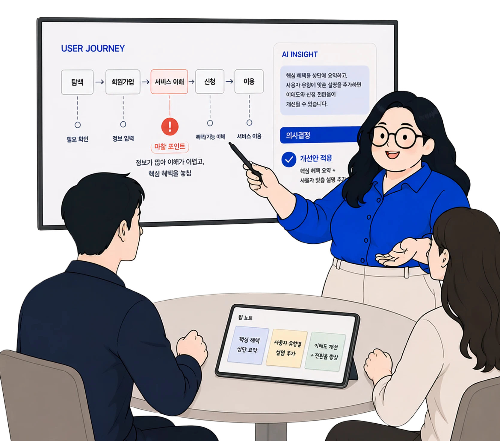

교육 · 통신 · 글로벌 · 금융 · 공공
이서현
Senior UI/UX Planner · PM/PL
- 산업
- 교육 · 통신 · 글로벌 · 금융 · 공공
- 프로젝트
- 신규 구축 · 통합 리뉴얼 · 장기 운영
- 담당 범위
- Front · Admin · CMS · LMS

Experience evidence
구축부터 운영까지,
서비스의 많은 과정을 경험했습니다.
Front · Admin · CMS · LMS · 키오스크
신규 구축 · 통합 리뉴얼 · 장기 운영
UI/UX 기획 · 서비스 기획 · PM/PL
Clients & projects
여러 회사와 함께,
서로 다른 서비스의 문제를 풀어왔습니다.
Operation
오랜 기간 동안 소통하는 운영으로
장기 운영을 진행하였습니다.
How I work
문제를 화면으로 옮기기 전에,
먼저 합의 가능한 구조를 만듭니다.
- 01발견
사용자·운영·정책의 문제를 구분합니다.
- 02구조화
정보와 행동의 우선순위를 정리합니다.
- 03합의
현업·디자인·개발이 같은 기준으로 판단하도록 만듭니다.
- 04실행
화면·정책·운영 도구를 구체화하고 QA합니다.
- 05운영
결과와 요청을 다음 개선 과제로 연결합니다.